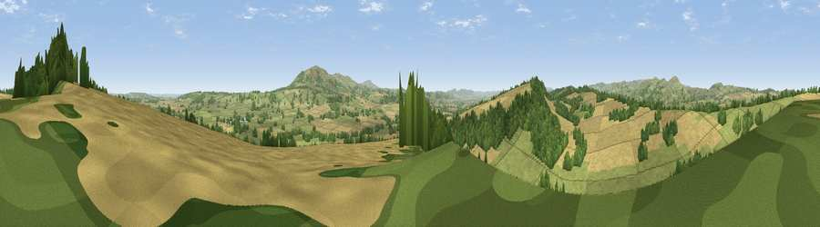

Viewpoint near Longville in the Dale
#10023 in England · top 27% of its area beats it · near Longville in the DaleWhere it is
The exact computed spot (SO 54788 91862). Click the marker for map links.
The view, rendered

A 360° render of this exact spot computed from the terrain model, tree cover and land cover — summer colours, afternoon light, calibrated against photographs of famous viewpoints. Real trees, hedges and buildings will differ in detail.
The panorama
Grey silhouette: terrain skyline in each direction (720 bearings, Earth curvature and refraction included). Dashed green: skyline with trees (+15 m) and buildings (+8 m) as obstacles. Blue strip: how far the ground is visible on each bearing.
Where the view opens
Wedge length = distance to the farthest visible ground on that bearing (vegetation-aware). Rings at 10, 25 and 50 km.
What fills the view
49% grassland · 34% cropland · 17% woodland
Angular shares of the visible panorama (visual magnitude), not map area. Landscape diversity 0.45 (0–1 Shannon).
Key numbers
More beautiful places nearby
The staircase of upgrades: each row has a higher view potential than everything closer. Driving times are estimates from straight-line distance, calibrated against real road routing — check an actual route before setting out.
| Place | Direction | Drive | Score |
|---|---|---|---|
| Fegg Hill | NNE · 2 km | ~5 min | 68.5 |
| Hungerford Hill | SW · 2 km | ~5 min | 72.6 |
| Viewpoint near Broadstone | SW · 3 km | ~7 min | 72.8 |
| Viewpoint near Abdon | SE · 7 km | ~14 min | 82.6 |
| The Lawley | NW · 8 km | ~16 min | 85.8 |
| Viewpoint near Little Wenlock | NNE · 18 km | ~31 min | 86.6 |
| North Hill | SSE · 51 km | ~72 min | 86.8 |
| Worcestershire Beacon | SSE · 52 km | ~73 min | 87.1 |
52.52275, -2.66779 · source: screening · position refined by local search. Computed location — check access rights before visiting.